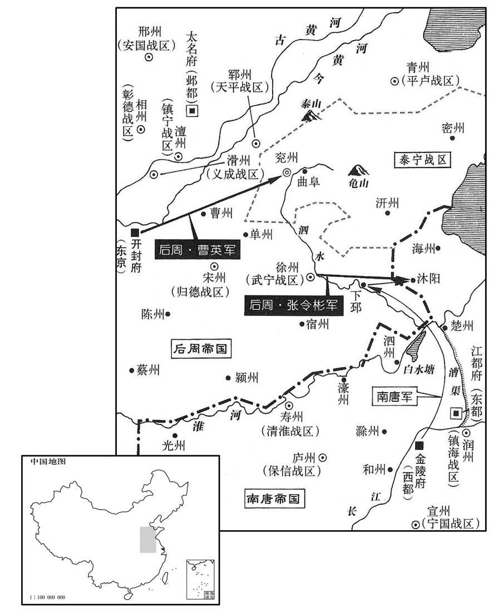
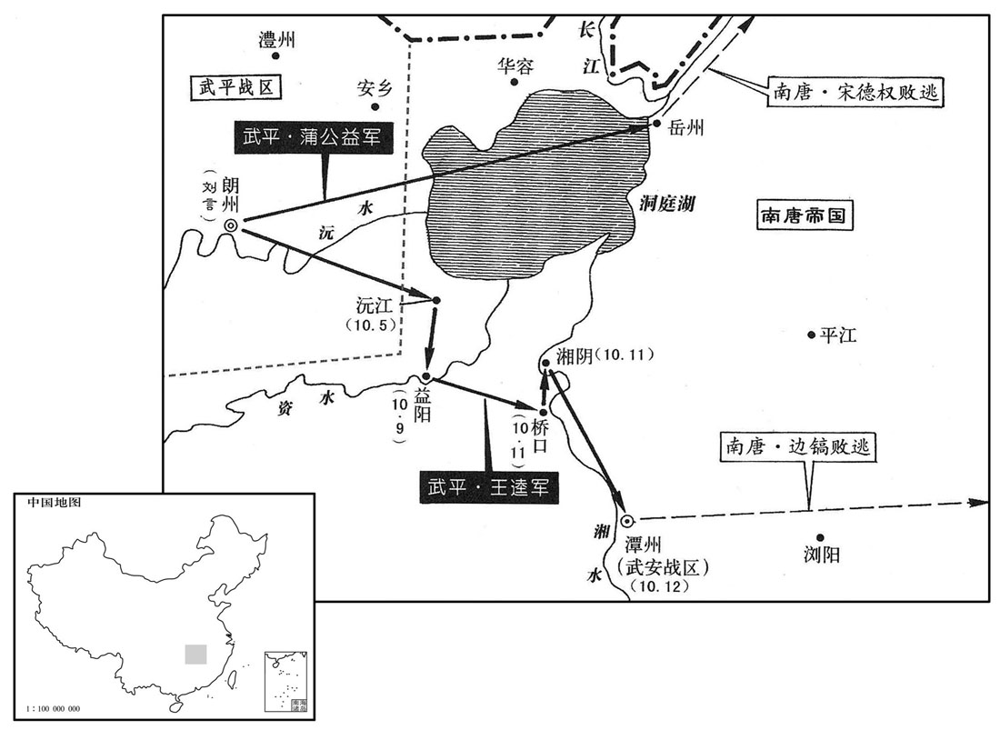

公元952年资治通鉴：本年记事、原文与白话对照
按原书编年位置阅读；追叙和史论不等于本年发生的事件。白话采用所据译本，缺译不以生成译文补齐。
卷290 · 本年记事
公元952年 · 后周太祖圣神恭肃文孝皇帝广顺二年
二年〔壬子，九五二〕
本年记事分属相邻卷，按原书顺序分别保留：第290卷 · 第291卷。
本年事件索引（现代整理）
- 孙朗曹进在金陵发动兵变后逃回朗州投奔王逵
- 后周征调五万民夫修筑大梁城，十日完成
- 慕容彦超备战并招募盗贼骚扰邻境，后周任曹英等讨伐
- 南唐援军在沐阳被徐州军击败，损失千余人
- 北汉契丹与南唐援军相继失利后慕容彦超叛乱势头受挫
- 永兴节度使李洪信担心不安而入朝
- 王峻从晋州回朝
- 后周军围攻兖州，慕容彦超屡战失利
- 崔周度劝慕容彦超归顺被拒，阎弘鲁夫妇因财物被严刑逼死
- 北汉军攻府州失败，折德扆又攻克岢岚军
- 后周释还唐将燕敬权并劝南唐不要援助叛臣
- 南唐长期遣使海上联络契丹，契丹只贪取馈赠并不提供实质援助
- 南唐任江文蔚主持科举取士，因张纬等反对而最终停办
- 后周任郑仁诲为枢密副使
- 后周将威胜军改名为武胜军
- 南唐任冯延己为左仆射，常梦锡当众讥讽其文书
- 南唐主将政务交给冯延己，见其不能理事后重新亲自处理
- 萧俨多次弹劾冯延己却因误判死罪获救
- 南唐罢免徐景运并任其为太子少傅
- 后周发生日食
- 后周太祖因久攻兖州不克而下诏亲征
- 南唐攻取湖南后又出兵攻桂州遭南汉伏击大败
- 后周太祖亲自率军前往兖州督战
- 慕容彦超祈求镇星庇佑仍被后周攻克兖州，遂与妻子投井自杀
- 后周太祖赦免兖州胁从官吏并降泰宁军为防御州
- 南唐李建勋临终嘱咐家人不要封墓立碑
- 后周太祖亲自拜谒孔庙与孔子墓并保护孔林
- 吴越顺德太夫人吴氏去世
- 后蜀成都遭洪水淹没千余家并大赦赈灾
- 后周太祖返回大梁
- 冯晖去世，其子冯继业杀兄后接管朔方军
- 李浣从契丹传回情报，建议后周尽快用兵或议和
- 后周任冯继业为朔方留后
- 王峻恃功骄横并多次称病辞职试探后周太祖
- 后周太祖准许李谷免朝参但继续处理政务
- 后蜀王承丕杀郭延钧后发动兵变，被孙钦率军平定
- 高行周去世，后周追念其勇义谦逊
- 后蜀派赵季札赴梓州安抚官民
- 后周按私盐与酒曲数量分级量刑，改变一律死罪的旧法

本年形势与背景参考图

本年形势与背景参考图
春，正月，庚申，夜，孙朗、曹进帅其徒作乱，〔帅，读曰率。〕束槁潜烧府门，火不然。边镐觉之，出兵格斗，且命鸣鼓角，朗、进等以为将晓，斩关奔朗州。王逵问朗曰：「吾昔从武穆王，〔马殷谥武穆王。〕与淮南战屡捷，淮南兵易与耳。〔易，以䜴翻。〕今欲以朗州之众复取湖南，可乎？」朗曰：「朗在金陵数年，备见其政事，朝无贤臣，军无良将，忠佞无别，赏罚不当，〔朝，直遥翻。将，即亮翻。别，彼列翻。当，丁浪翻。〕如此，得国存幸矣，何暇兼人！朗请为公前驱，取湖南如拾芥耳！」逵悦，厚遇之。〔为，于伪翻。王逵等本有圗湖南之志，于此遂决。〕
>[1]>春季，正月，庚申（初三），夜晚，孙朗、曹进率领他们的徒众举行叛乱，将藁草打成捆暗中焚烧镇府大门，火没点着。边镐发觉，派出士兵进行格斗，并且命令击鼓吹号，孙朗、曹进等以为天将破晓，便夺关破门逃奔朗州。王逵问孙朗道：“我昔日跟随楚武穆王，与淮南作战
>屡次取胜，淮南军队容易对付。如今打算用朗州的部众再次夺取湖南，可以吗？”孙朗说：“我在金陵>多年，详察南唐>的政事，朝廷没的贤臣，军队没有良将，忠诚奸佞不分，赏罚失当，像这样，能保存国家已是万幸了，还有什么闲暇去兼并别人！我请求做您的前锋，夺取湖南就如同捡拾小草！”王逵很高兴，厚礼待他。
壬戌，发开封府民夫五万修大梁城，旬日而罢。
>[2]>壬戌（初五），后周>征发开封府五万民夫修筑大梁城墙，十天完成。
慕容彦超发乡兵入城，引泗水注壕中，为战守之备。又多以旗帜授诸镇将，〔帜，昌志翻。剽，匹妙翻。〕令募群盗，剽掠邻境，所在奏其反状。甲子，敕沂、密二州不复隶泰宁军。〔先收其巡属以弱慕容彦超。复，扶又翻。〕以侍卫步军都指挥使、昭武节度使曹英为都部署，〔昭武军，利州属蜀，曹英遥领耳。〕讨彦超，齐州防御使史延超为副部署，皇城使河内向训为都监，〔向，姓也，本自有殷宋文公支子向文旰，旰孙戌以王父字为氏。余按春秋左氏传，向戍，宋桓公之后。向，式亮翻。监，古衔翻。〕陈州防御使乐元福为行营马步都虞候。〔药元福歴事唐、汉、晋，为将有功。将，即亮翻。〕帝以元福宿将，命英、训无得以军礼见之，二人皆父事之。
>[3]>慕容彦超调发乡兵入城，挖沟引泗水灌注壕沟中，作战斗防守的准备；同时把许多旗帜授予各镇将领，让他们招募成群结伙的强盗，抢掠邻近州县，骚扰所及之处纷纷奏报慕容彦超反叛的情况。甲子（初七），后周>太祖敕令沂、密二州不再隶属泰宁军。任命侍卫步军都指挥使>、昭武节度使>曹英为都部署，讨伐慕容彦超，齐州防御使>史延超为副部署，皇城使河内人向训为都监，陈州防御使>药元福为行营马步都虞候。后周>太祖因为药元福是经验丰富的老将，命令曹英、向训不得按照军礼见药元福，二人都像对父亲那样待他。
唐主发兵五千，军于下邳，以援彦超。闻周兵将至，退屯沐阳。〔下邳县，属徐州，东南至沭阳县百里。刘昫曰：沭阳，汉廪丘县，后魏改曰沭阳，唐属海州。九域志：在海州西南一百八十里。杜佑曰：海州沭阳县，汉原丘县地，梁置潼阳郡。沭，食聿翻。〕徐州巡检使张令彬击之，大破唐兵，杀、溺死者千余人，获其将燕敬权。〔燕，于贤翻。〕
南唐>君主发兵五千，驻扎在下邳，以便援助慕容彦超；听说后周>军队将到，后退屯驻沭阳。徐州巡检>使张令彬出击，大败南唐>军队，杀死、淹死的有一千
>多人，抓获南唐>将领燕敬权。
初，彦超以周室新造，谓其易摇，〔易，以䜴翻。〕故北召北汉及契丹，南诱唐人，使侵边鄙，冀朝廷奔命不暇，然后乘间而动。〔诱，音酉。间，古苋翻。〕及北汉、契丹自晋州北走，唐兵败于沐阳，彦超之势遂沮。沮在吕翻
>当初，慕容彦超因周朝新建，认为容易动摇，所以北面召呼北汉>和契丹，南面引诱南唐人>，让他们侵犯边疆，希望朝廷疲于奔命无暇它顾，然后自己乘机而动。及至北汉>、契丹军队从晋州败走，南唐>军队在沭阳溃败，慕容彦超的势力于是受挫。
永兴节度使李洪信，自以汉室近亲，心不自安。〔李洪信，汉李太后之群从也。〕城中兵不满千人，王峻在陕，以救晋州为名，发其数百。及北汉兵遁去，遣禁兵千余人戍长安。洪信惧，遂入朝。
永兴节度使>李洪信，因为自己是后汉>皇室的近亲，内心不能自安，城中军队不满千人，王峻在陕州>时，以援救晋州的名义，调发其中数百人。及至北汉>军队逃跑离去，朝廷又派遣禁兵一千多人戍守长安>；李洪信深感恐惧，于是只得进京入朝。
壬申，王峻自晋州还，入见。〔逐，从宣翻，又如字。见，贤遍翻。〕
>[4]>壬申（十五日），王峻从晋州回来，入朝拜见后周>太祖。
曹英等至兖州，设长围。慕容彦超屡出战，药元福皆击败之，〔败，补迈翻。〕彦超不敢出。十余日，长围合，遂进攻之。
>[5]>曹英等到达兖州，布设包围圈。慕容彦超屡次出城交战，药元福都击败他，慕容彦超便不敢出来。十几天后，包围圈合围，就发起进攻。
初，彦超将反，判官崔周度谏曰：「鲁，诗书之国，自伯禽以来不能霸诸侯，然以礼义守之，可以长世。公于国家非有私憾，胡为自疑！况主上开谕勤至，苟撤备归诚，则坐享泰山之安矣。独不见杜中令、安襄阳、李河中竟何所成乎！」〔杜中令，谓杜重威，安襄阳，谓安从进，李河中，谓李守贞，皆以反而败死，事并见前纪。〕彦超怒。及官军围城，彦超括士民之财以赡军，坐匿财死者甚众。前陕州司马阎弘鲁，宝之子也，〔阎寳背梁归唐，歴节镇。〕畏彦超之暴，倾家为献。彦超犹以为有所匿，命周度索其家，〔索，山客翻。〕周度谓弘鲁曰：「君之死生，系财之丰约，宜无所爱。」弘鲁泣拜其妻妾曰：「悉出所有以救吾死。」皆曰：「竭矣！」周度以白彦超，彦超不信，收弘鲁夫妻系狱。有乳母于泥中掊得金缠臂，〔掊，蒲沟翻，以手爬土也。〕献之，冀以赎其主。彦超曰：「果然，所匿必犹多。」榜掠弘鲁夫妻，肉溃而死。以周度为阿庇，斩于市。
>当初，慕容彦超将要反叛，判官崔周度劝谏说：“鲁这个地方，是诗书的国家，自从伯禽>以来虽不能称霸诸侯>，然而用礼义守护，可以长存于世。您对国家并无私恨，为什么自己疑神疑鬼，况且主上开导诫谕关怀备至，假如撤去防备归降投诚，就可以坐享太山那样的平安了。难道没看见杜重威、安从进、李守贞结果干成什么了吗！”慕容彦超大怒。及至官军围城，慕容彦超搜刮士人百姓的财产来供应军需，因隐匿财产罪被处死的人很多。前陕州司马>阎弘鲁是阎宝的儿子，畏惧慕容彦超的残暴，把全部家产献出，但慕容彦超仍然认为他有所隐瞒，命令崔周度搜索阎家。崔周度对阎弘鲁说：“您的死生之命，就系连在献出财产的多少上，应该无所吝惜。”阎弘鲁流泪叩拜他的妻子侍妾说：“拿出全部所有的财物来救我免死。”都说：“一点儿也没有了。”崔周度将情况告诉慕容彦超，慕容彦超不相信，拘捕阎弘鲁夫妻押在监狱。有个奶妈从泥土中扒到金镯子，献给官府，希望赎出主人。慕容彦超说：“所隐藏的必定还有很多。”拷打阎弘鲁夫妻，皮开肉绽而死。又认为崔周度袒护包庇阎弘鲁，将他在闹市斩首。
北汉遣兵寇府州，防御使折德扆败之，〔败，补迈翻。〕杀二千余人。二月，庚子，德扆奏攻拔北汉岢岚军，以兵戍之。〔旧唐书地理志曰：岚州岚谷县，旧岢岚军也，在岚州宜芳县北界；长安二年，分宜芳，于岢岚旧军置岚谷县；神龙二年，废县，置军；开元十二年复置县。此盖后唐复置军也。九域志：岢岚军，治岚谷县，南至岚州九十里。岢，枯我翻。〕
>[6]北汉>派遣军队侵犯府州，防御使>折德击败入侵军队，杀死二千多人。二月，庚子（十四日），折德奏报攻下北汉>岢岚军，用军队守卫。
甲辰，帝释燕敬权等使归唐，谓唐主曰：「叛臣，天下所共疾也，不意唐主助之，得无非计乎！」唐主大惭，先所得中国人，皆礼而归之。唐之言事者犹献取中原之策，中书舍人韩熙载曰：「郭氏有国虽浅，为治已固，〔治，直吏翻。〕我兵轻动，必有害无益。」
>[7]>甲辰（十八日），后周>太祖释放燕敬权等人让他们回归南唐>，对南唐>主说：“叛逆之臣，是天下所共同痛恨的，不料唐主扶助他们，恐怕是失策了吧！”南唐>主大感惭愧，将先前所得的中原降附人士，都以礼相待遣返回国。南唐>谈论政事的人仍然进献夺取中原的计策，中书舍人>韩熙载说：“郭氏撑握国家虽然时间不长，但统治已经牢固，我国军队轻易出动，必然有害无益。”
唐自烈祖以来，〔唐主升庙号烈祖。〕常遣使泛海与契丹相结，欲与之共制中国，更相馈遗，〔更，工衡翻。遗，唯季翻。〕约为兄弟。然契丹利其货，徒以虚语往来，实不为唐用也。
南唐>自从烈祖以来，经常派遣使者飘洋过海与契丹相勾结，打算和契丹共同钳制中原，并厚礼馈赠，相约结为兄弟。然而契丹贪图送来的财货，只是用空话作为回报，实际上不被南唐>所利用。
唐主好文学，〔好。呼到翻。〕故熙载与冯延己、延鲁、江文蔚、潘佐、徐铉之徒皆至美官。佑，幽州人也。当时唐之文雅于诸国为盛，然未尝设科举，多因上书言事拜官，至是，始命韩林学士江文蔚知贡举，进士庐陵王克贞等三人及第。〔庐陵，汉县，唐带吉州。蔚，纡勿翻。〕唐主问文蔚：「聊取士何如前朝？」对曰：「前朝公举、私谒相半，臣专任至公耳。」唐主悦。中书舍人张纬，前朝登第，闻而衔之。时执政皆不由科第，相与沮毁，竟罢贡举。〔南唐罢贡举，时中国未尝罢贡举也。〕
南唐>主喜好文学，所以韩熙载与冯延己、冯延鲁、江文蔚、藩佑、徐铉等人都得到高官。潘佑是幽州人。当时南唐>的艺文礼乐比其它各国兴盛，然而未曾设立科举制度>，大多根据上书言事来授于官职。到这时，开始任命翰林学士>江文蔚主持贡举，进士有庐陵>人王克贞等三人考中。南唐>主问江文蔚：“爱卿取士比前朝怎么样？”回答说：“前朝公家荐举、私人说情各占一半，臣下专用一种绝对公正！”南唐>主很高兴。中书舍人>张纬，前朝取中进士，听说此话而怀恨在心。当时朝廷执政官员都不是经科举任职，便一齐阻挠诋毁，结果停止了科举选仕。
三月，戊辰，以内客省使、恩州团练使晋阳郑仁诲为枢密副使。〔按是时中国无恩州，此即南汉之恩州也，郑仁诲遥领团练使耳。宋庆厯八年，平王则，改贝州为恩州，始以岭南之恩州为南恩州以别之。〕
>[8]>三月，戊辰（十二日），任命内客省使、恩州团练使晋阳>人郑仁诲为枢密副使。
甲戌，改威胜军曰武胜军。〔旧以邓州为威胜军，今避上名而改之。〕
>[9]>甲戌（十八日），后周>威胜军改名为武胜军。
唐主以太弟太保、昭义节度使冯延己为左仆射，前镇海节度使徐景运为中书侍郎，及右仆射孙晟皆同平章事。既宣制，户部尚书常梦锡众中大言曰：「白麻甚佳，但不及江文蔚疏耳！」〔江文蔚疏见二百八十七卷汉天福十二年。〕晟素轻延己，谓人曰：「金杯玉碗，乃贮狗矢乎！」〔盌，乌管翻。贮，丁吕翻。〕
>[10]南唐>主任命太弟太保、昭义节度使>冯延己为左仆射>，前镇海节度使>徐景运为中书侍朗，和右仆射>孙晟都为同平章事>。宣读制书后，户部尚书>常梦锡在大庭广众中大声说道：“白麻诏书虽然很好，只是不及江文蔚的弹劾疏文啊！”孙晟素来轻视冯延己，对人说：“金杯玉碗，竟然盛了狗屎！”
延己言于唐主曰：「陛下躬亲庶务，故宰相不得尽其才，此治道所以未成也。」〔治，直吏翻。〕唐主乃悉以政事委之，奏可而已。既而延己不能勤事，文书皆仰成胥史，〔仰，牛向翻。〕军旅则委之边将。顷之，事益不治，唐主乃复自览之。〔复，扶又翻。〕
>冯延己对南唐>主说：“陛下亲自处理各种政务，所以宰相>不能全部施展他的才能，这就是安邦治国之道未能实现的原因啊！”南唐>主于是便把政事全部委托给他，只等奏报点头而己。不久，冯延己不能勤理事务，文书仰仗刀笔小吏写成，军务就交给守边将领，过了一段时间，事务愈发不能处理，南唐>主才再次亲理朝政。
大理卿萧俨恶延己为人，数上疏攻之，会俨坐失入人死罪，〔恶，乌路翻。数，所角翻。上，时掌翻。误入人死罪，谓之失入。〕钟谟、李德明辈必欲杀之，延己曰：「俨误杀一妇人，诸君以为当死，俨九卿也，可误杀乎？」独上言：「俨素有直声，今所坐已会赦，宜从宽宥。」俨由是得免。人亦以此多之。
大理>卿萧俨憎恶冯己的为人，多次上疏攻击冯延己。正好遇上萧俨犯了错判人死罪的过失，钟谟、李德明等一帮人一定要杀萧俨，冯延己说：“萧俨误杀一个妇人，诸位认为应当处死。萧俨是九卿>之一，难道可以误杀吗？”单独上言说：“萧俨一向有耿直的名声，如今所判犯人已遇赦免，应当从宽饶恕他的过失。”萧俨因此得以免死；人们也为此称道冯延己。
景运寻罢为太子少傅。〔按唐既置太弟官属，不应复有太子少傅，当考。〕
>徐景运不久被罢免中书侍郎>、同平章事>之职而任太子>少傅。
夏，四月，丙戌朔，日有食之。
>[11]>夏季，四月，丙戌朔（初一），出现日食。
帝以曹英等攻克兖州久未克，乙卯，下诏亲征，以李谷权东京留守兼判开封府，郑仁诲权大内都点检，又以侍卫马军都指挥使郭崇充在京都巡检。
>[12]后周>太祖因为曹英等攻打兖州长时间不下，乙卯（三十日），下诏书亲自出征，任命李代理东京>留守兼领开封府，郑仁诲代理大内都巡检>，又任命侍卫马军都指挥使>郭崇担任在京都巡检>。
唐主既克湖南，遣其将李建期屯益阳以图朗州，以知全州张峦兼桂州招讨使以图桂州，久之，未有功。唐主谓冯延己、孙晟曰：「楚人求息肩于我，〔言湖南之人苦其主之虐政暴敛，而求息肩于唐。〕我未有以抚其疮痍而虐用其力，非所以副来苏之望。〔书曰：后来其苏。言楚人望唐之休息，而唐又兴兵役以疲之，非所以副其望。使唐主言而能行，不揺于众口，乌有它日之败乎！〕吾欲罢桂林之役，敛益阳之戍，以旌节授刘言，何如？」晟以为宜然。〔宜然，犹言宜如此也。〕延己曰：「吾出偏将举湖南，远近震惊。一旦三分丧二，〔得潭而失朗、桂，故谓之三分丧二。丧，息浪翻。〕人将轻我。请委边将察其形势。」唐主乃遣统军使侯训将兵五千自吉州路趣全州，〔趣，七喻翻。〕与张峦合兵攻桂州。南汉伏兵于山谷，峦等始至城下，罢乏，〔罢，读曰疲。〕伏兵四起，城中出兵夹击之，唐兵大败，训死，峦收散卒数百奔归全州。
>[13]南唐>主已经攻克湖南，派遣其将领李建期屯兵益阳来谋取朗州，任命知全州>事务张峦兼任桂州招讨使>来谋取桂州，旷日持久，没有成功。南唐>主对冯延己、孙晟说：“楚人求我能让他们休养生息，但我没有抚恤治疗战乱的创伤反而滥用民力，这不是用以实现楚人复苏愿望的办法；我打算停止桂林的战役，收回益阳的屯兵，将指挥权授于刘言，怎么样？”孙晟认为应该这样。冯延己说：“我们派出偏将攻取湖南，远近四方为之震惊；若一旦丧失三分之二，人家将会轻视我们。请求委派守边将领试探朗州、桂州的形势。”南唐>主于是派遣统军使侯训领兵五千从吉州>一路赶赴全州>，与张峦合兵进攻桂州。南汉>在山谷埋伏军队，张峦等刚到城下，十分疲乏，突然南汉>伏兵四起，桂州城中出动军队前后夹击，南唐>军队大败，侯训战死，张峦收拾残兵数百逃归全州>。
五月，庚申，帝发大梁。戊辰，至兖州。己巳，帝使人招谕慕容彦超，城上人语不逊。庚午，命诸军进攻。
>[14]>五月，庚申（初五），后周>太祖从大梁出发；戊辰（十三日），到达兖州。己巳（十四日），后周>太祖派人招安慕容彦超，但城上的人出言不逊；庚午（十五日），后周>太祖命令各军发起进攻。
先是，术者绐彦超云：「镇星行至角、亢，角、亢兖州之分，〔先，悉荐翻。镇星，土星也。亢，苦郎翻。分，扶问翻。〕其下有福。」彦超乃立祠而祷之，令民家皆立黄幡。〔土色黄，彦超令立幡以从其色。人心悦则天意得，人有离心，厌胜何益！〕彦超性贪吝，官军攻城急，犹瘗藏珍宝，〔瘗，于计翻。〕由是人无斗志，将卒相继有出降者。乙亥，官军克城，彦超方祷镇星祠，帅众力战，〔帅，读曰率。〕不胜，乃焚镇星祠，与妻赴井死。子继勋出走，追获，杀之。官军大掠，城中死者近万人。〔近。其靳翻。〕初，彦超将反，募群盗置帐下，至者二千余人，皆山林犷悍，〔犷，古猛翻。悍，侯旰翻，又下罕翻。〕竟不为用。
>
在此之前，方士欺骗慕容彦超说：“土星已运行到角、亢二宿，角、亢是兖州的分野，土星下面有福运。”慕容彦超于是建立祠堂祈祷求福，并命令民间都要树立黄色旗幡。慕容彦超生性贪婪吝啬，官军攻城紧急，仍然埋藏珍宝，因此人无斗志，将领士卒相继有出城投降的。乙亥（二十日），官军攻克兖州城，慕容彦超正在土星祠祈祷，急忙率领部众拼力战斗，没有获胜，于是焚烧土星祠，与妻子投井而死。儿子慕容继勋出城逃跑，被追兵抓获，杀死。官军大肆抢掠，城中死的接近万人。当初，慕容彦超将要反叛，招募群盗安置在自己手下，来的盗贼有二千多人，都是山林粗犷强悍之徒，结果却没有被他派上用场。
帝欲悉诛兖州将吏，翰林学士窦仪见冯道、范质，与之共白帝曰：「彼皆胁从耳。」乃赦之。丁丑，以端明殿学士颜衎权知兖州事。〔衎，苦旱翻，又苦旰翻。〕壬午，赦兖州管内，彦超党与逃匿者期一月听自首，〔首，式又翻。〕前已伏诛者赦其亲戚。癸未，降泰宁军为防御州。〔以慕容彦超据兖州拒命，降节镇为防御州。〕
后周>太祖想诛杀兖州所有的将领官吏，翰林学士>窦仪谒见冯道>、范质，和二人共同对后周>太祖说：“他们都只是胁从罢了。”太祖于是赦免了兖州将吏。丁丑（二十二日），任命端明殿学士颜临时主持兖州事务。在兖州管区内实行大赦，规定慕容彦超同党逃跑隐匿者一月之内随时可以自首，以前已经伏罪诛杀者赦免他们的亲戚。癸未（二十八日），将泰宁军降为防御州。
唐司徒致仕李建勋卒，且死，戒家人曰：「时事如此，吾得良死幸矣！勿封土立碑，听人耕种于其上，免为他日开发之标。」及江南之亡也，〔谓宋平金陵时。〕诸贵人高大之冢无不发者，惟建勋冢莫知其处。〔李建勲知国事之日非而骸骨得保其藏。可不谓智乎！〕
>[15]南唐司徒>退休李建勋去世，临死时，告诫他的家里人说：“世道到了如此地步，我能得好死已经很幸运了！不要在这坟头封土立碑，任凭别人在坟上耕种，免得成为日后开挖盗发的标志。”及至江南沦亡，各权贵人家高大的墓冢没有不被发掘的，只有李建勋的坟无人知道地方。
六月，乙酉朔，帝如曲阜，谒孔子祠。〔昔少皥氏自穷桑而徙曲阜；鲁侯伯禽所宅，少皥氏之墟也。应劭曰：曲阜在鲁城中，委曲长七八里。刘昫曰：曲阜有阙里，孔子所居，后人立孔子祠。自唐以来兖州治瑕丘，而曲阜为属县。九域志：在州东四十里。宋大中祥符五年，改曲阜为仙源县。〕既尊，将拜。左右曰：「孔子，陪臣也，不当以天子拜之。」帝曰：「孔子百世帝王之师，敢不敬乎！」遂拜之。又拜孔子墓，命葺孔子祠，禁孔林樵采。〔孔子庙在曲阜城西南隅阙里。孔子墓在曲阜城北泗水上，去城一里，葬地葢一顷，坟南北十步，东西十三步，髙一丈二尺，前有瓴甋，为祠坛，方六尺，与地平。茔中异木以百数，皆诸弟子自四方致之，植于茔中，鲁人莫之识也。〕访孔子、颜渊之后，以为曲阜令及主簿。丙戌，帝发兖州。
>[16]>六月，乙酉朔（初一），后周>太祖前往曲阜，拜谒孔子>祠。已献上供品，将行拜礼，左右侍臣说：“孔子>是诸侯>的大夫，不应当以天子的身分拜他。”太祖说：“孔子>是百代帝王的老师，岂敢不恭敬啊！”子是行拜。又拜孔子>墓，命令修缮孔子>祠，禁止在孔林打柴采草。访求孔子>、颜渊>的后代，任命做曲阜县令以及主簿>。丙戌（初二），后周>太祖从兖州出发。
乙未，吴越顺德太夫人吴氏卒。
>[17]>乙未（十一日），吴越>顺德太夫人吴氏去世。
丁酉，蜀大水入成都，〔秦时，蜀守李冰穿二江成都中，皆可行舟。郡县志曰：李冰凿离泽，又开二渠，由永康过新繁入成都，谓之外江；又一渠由永康过郫入成都，谓之内江。髙骈未筑罗城。内、外江皆从城西入，自骈筑城，遂从西北作糜枣堰。外江遶城北而东注于合江，内江循城南而与外水俱注江。江自西来，其地势髙，所以有水患。〕漂没千余家，溺死五千余人，坏太庙四室。〔坏，音怪。〕戊戌，蜀大赦，赈水灾之家。
>[18]>丁酉（十三日），后蜀>发大水冲入成都，漂没一千多家，淹死五千多人，冲坏太庙四室。戊戌（十四日），后蜀>发布大赦，救济遭受水灾的人家。
己亥，帝至大梁。〔自兖州还至大梁。〕
>[19]>己亥（十五日），后周>太祖回到大梁。
朔方节度使兼中书令陈留王冯晖卒，其子牙内都虞候继业杀其兄继勋，自知军府事。
>[20]>朔方节度使>兼中书令陈留>王冯晖去世，他的儿子牙内都虞候冯继业杀死其兄冯继勋，自己主持方镇>军政事务。
太子宾客李涛之弟澣，在契丹为勤政殿学士，与幽州节度使萧海真善。海真，契丹主兀欲之妻弟也。浣说海真内附，海真欣然许之。澣因定州谍者田重霸赍绢表以闻，〔说，式芮翻。谍，达协翻。重，直龙翻。〕且与涛书，言：「契丹主童騃，〔騃，五骇翻，痴也。〕专事宴游，无远志，非前人之比，〔前人，谓阿保机、徳光等。〕朝廷若能用兵，必克；不然，与和，必得。二者皆利于速，度其情势，他日终不能力助河东者也。」〔度，徒洛翻。河东谓北汉。〕壬寅，重霸至大梁，会中国多事，不果从。〔北不得燕、云，西不得河、鄯、灵、夏，宋人以为千古之恨。观温公书此事，则元佑初弃米脂等四寨，知中国之力不足也。〕
>[21]后周>太祖太子宾客>李涛的弟弟李浣，在契丹当勤政殿学士，与幽州节度使>萧海真关系很好。萧海真是契丹主耶律兀欲的妻弟。李瀚劝说萧海真归附后周>，萧海真欣然答应。李浣利用定州间谍田重霸携带绢表来传报，并且给李涛信，说：“契丹主幼稚愚昧，专门从事闲逛游戏，毫无远大志向，没法同他的前人相比，朝廷倘若能够用兵，必定取胜；不然的话，与他讲和，也必定可以。这两者都宜于快速进行，估计契丹的情况形势，将来终究不能出力帮助河东的北汉>。”壬寅（十八日），田重霸到达大梁，遇上国内事情繁多，结果没有采取李浣之计。
辛亥，以冯继业为朔方留后。
>[22]>辛亥（二十七日），任命冯继业为朔方留后。
枢密使王峻，性轻躁，多计数，好权利，喜人附己。〔躁，则到翻。好，呼到翻。喜，许记翻，〕自以天下为己任。每言事，帝从之则喜，或时未允，辄愠怼，〔愠，于运翻。怼，直类翻。〕往往发不逊语。帝以其故旧，且有佐命功，帝自邺都入汴以至即位王峻之功为多又素知其为人，每优容之。峻年长于帝，帝即位，犹以兄呼之，或称其字，峻以是益骄。副使郑仁诲、皇城使向训、恩州团练使李重进，皆帝在籓镇时腹心将佐也，〔重，直龙翻。将，即亮翻。〕帝即位，稍稍进用。峻心嫉之，累表称疾，求解机务，以诇帝意。〔诇，古永翻，又翾正翻。〕帝屡遣左右敦谕，峻对使者辞气亢厉。〔亢，苦浪翻。〕又遗诸道节度使书求保证，〔遗，唯季翻。〕诸道各献其书，帝惊骇久之，复遣左右慰勉，〔复，扶又翻。〕令视事，且曰：「卿倘不来，朕且自往。」犹不至。帝知枢密直学士陈观与峻亲善，令往谕指，观曰：「陛下但声言临幸其第，严驾以待之，峻必不敢不来。」从之。秋，七月，戊子，峻入朝，帝慰劳令视事。〔劳，力到翻。为贬王峻张本。〕重进，沧州人，其母即帝妹福庆长公主也。长知两翻
>[23]>枢密使王峻性情轻浮急躁，善于算计，贪图权利，喜欢人家奉承自己。自负得认为治理天下的重任只有自己才能承担。他经常谈论政事，后周>太祖听从他就高兴，有时不同意，就怨恨，往往出言不逊；太祖念其元老旧臣，并且有辅佐创立帝业的功劳，又一向深知他的为人，常常宽容原谅他。王峻年纪比太祖大，太祖即位，仍然对王峻以兄相称，或者称他的字，王峻因此愈加骄横。枢密副使郑仁诲、皇城使向训、恩州团练使李重进，都是太祖在藩镇>时的心腹将佐，太祖即位，逐渐提拔起用他们。王峻心中妒嫉，便多次上表称说有病，请求解除政务，以此试探太祖的意思。太祖屡次派遣左右侍者敦促劝慰，王峻回答使者的言词意气非常激烈厉害，同时给各道节度使>去信寻求保举证书；各道分别进献保举王峻的书信，后周>太祖阅后惊骇很久，又派左右侍者慰问劝勉，让他治理政事，并且说：“爱卿倘若不来，朕将亲自前往。”王峻仍然不到朝廷。太祖知道枢密直学士陈观与王峻亲密友善，便令他前去宣谕旨意，陈观说：“陛下只须扬言要亲自驾临他的家，王峻必定不敢不来。”秋季，七月戊子（疑误），王峻上朝，太祖慰劳他并让他处理政事。李重进是沧州人，他母亲就是太祖的妹妹福庆长公主。
李谷足跌，伤右臂，〔跌，徒结翻。〕在告月余。帝以谷职业繁剧，趣令入朝，〔在告，在假也。趣，读曰促。朝，直遥翻，下同。〕辞以未任趋拜。〔任，音壬。〕癸巳，诏免朝参，但令视事。
>[24]>李失足摔跤，伤了右臂，休假一个多月。太祖因为李主管的业务繁多紧急，便催促他入朝，李以不能行朝拜大礼为理由推辞。癸巳（十八日），太祖下诏免除他的入朝参拜礼节，只让他处理事务。
蜀工部尚书、判武德军邵延钧不礼于监押王承丕，承丕谋作乱。辛丑，左奉圣都指挥使安次孙钦当以部兵戍边，〔安次县，属幽州。孙钦本燕人而仕于蜀。〕往辞承丕，承丕邀与俱见府公。〔府公谓郭延钧也。公者，人之尊称；一府所尊，故谓之府公。〕钦不知其谋，从之。承丕至，则令左右击杀延钧，屠其家，称奉诏处置军府，〔处，昌吕翻。〕即开府库赏士卒，出系囚，发屯戍。将吏毕集，钦谓承丕曰：「今延钧已伏辜，公宜出诏书以示众。」承丕曰：「我能致公富贵，勿问诏书。」钦始知承丕反，因绐曰：「今内外未安，我请以部兵为公巡察。」〔为，于伪翻。〕即跃马而出，承丕连呼之，不止。钦至营，晓谕其众，帅以入府，〔帅，读曰率。〕攻承丕，承丕左右欲拒战，钦叱之，皆弃兵走，遂执承丕，斩之，并其亲党，传首成都。
>[25]后蜀工部尚书>、判武德>军郭延钧对监押王承丕无礼，王承丕阴谋发动叛乱。辛丑（十八日），左奉圣都指挥使>安次人孙钦应当率所部士兵戍守边关，前往王承丕处告辞，王承丕邀请他一同去参见府公郭延钧。孙钦不知他的阴谋，跟从他去。王承丕到后，就命手下击杀郭延钧，并屠杀他全家，号称奉诏命处理军府事务，立即打开仓库赏赐士卒，放出关押的囚犯，征发他们屯戍边疆。将领官吏全部集合，孙钦对王承丕说：“如今郭延钧已经伏罪，您该拿出诏书来给大家看。”王承丕说：“我能让您得到富贵，不必再问诏书。”孙钦这才知道王承丕是在造反，就骗他说：“如今内外没有安定，我请求用所部士兵为您巡逻检查。”随即跳上马奔驰而出，王承丕连声叫他，没有止步。孙钦回到军宫，向部众说明情况，率领队伍进入军府，攻击王承丕，王承丕左右侍卫想抵抗战斗，孙钦大声呼喝，侍卫全都丢弃武器逃跑，于是抓住王承丕，斩杀了他，连及他的亲属同党，将王承丕首级传送成都。
天平节度使、守中书令高行周卒。行周有勇而知义，功高而不矜，策马临敌，叱咤风生，平居与宾僚宴集，侃侃和易，人以是重之。〔咤，涉驾翻。易，以䜴翻。史言髙行周所以能以功名终。〕
>[26]>天平节度使>、守中书令高行周去世。高行周勇敢而深明大义，功高而不骄傲自夸，战场上扬鞭策马亲临敌阵，叱咤风云，但平时居家与宾客>僚属闲暇聚会，和颜悦色，平易近人，人们因此尊重他。
癸卯，蜀主遣客省使赵季札如梓州，慰抚吏民。〔以新经王承丕之乱也。〕
>[27]>癸卯（二十日），后蜀>主派遣客省使赵季札前往梓州，慰问安抚官吏百姓。
汉法，犯私盐、麹，无问多少抵死。郑州民有以屋税受盐于官，过州城，吏以为私盐，执而杀之，其妻讼冤。癸丑，始诏犯盐、麹者以斤两定刑有差。〔时勑诸色犯盐、曲，所犯一斤已下至一两，杖八十，配役；五斤已下一斤已上，徒三年；五斤已上，重杖一顿，处死。〕
>[28]后汉>刑法规定，凡犯有走私食盐、酒曲罪的，不问数量多少一律处死。郑州百姓有人交纳屋税而从官府接受配给的盐，经过州城时，官吏以为是私盐，抓住杀了他；他的妻子申诉冤枉。癸丑（三十日），后周>太祖开始发布诏令：犯走私食盐、酒曲罪者，根据数量多少，定刑时应有差别。
译本所载内容待核对（不作白话）
>二年（壬子，公元952>年
卷291 · 本年记事
公元952年 · 后周太祖圣神恭肃文武孝皇帝广顺二年
广顺二年〔（壬子、九五二）〕
上传原文的注释括号有异常，字符原样保留；无法可靠划分的段落默认全文显示。
本年记事分属相邻卷，按原书顺序分别保留：第290卷 · 第291卷。
本年事件索引（现代整理）
- 吴越丞相裴坚去世，吴延福参与相府事务
- 后周禁止北边军民越境劫掠契丹人口财物
- 契丹高谟翰渡河劫掠冀州，所掠百姓欲反抗却遭杀害
- 后蜀李廷珪奏报后周在关中集结军队并请求增兵
- 欧阳广上书指出边镐无将才，南唐未采纳
- 刘言王逵等商议反抗南唐控制并计划夺取湖南
- 周行逢反对召集蛮族助战，改派刘桊防守西境
- 王逵等攻克益阳潭州等地，边镐弃城逃走并丢失湖南
- 契丹河北数州洪水泛滥，数十万流民进入后周境内
- 李谷因病请辞，后周太祖免其朝参仍令掌管三司
- 后周规定百姓诉讼须先经州县审理，不得挟私代诉
- 庆州刺史郭彦钦苛扰野鸡族引发其叛乱
- 刘言上表称平定湖南叛乱并解释未奉诏出兵
- 南唐贬边镐为庶民并流放饶州
- 冯延己孙晟上表请罪后被罢免宰相职务
- 南唐主决意停兵息民并任用欧阳广为县令
- 后周调折从阮镇守静难军并讨伐野鸡族
- 后周减免民间牛皮征输并允许自用出售
- 黄河在郑州滑州决口，后周派使者视察修堵
- 后周太祖拒收侯章献上的买宴礼物
- 王逵率军与洞蛮攻郴州，被南汉潘崇彻大败
- 徐台符请诛诬告李崧的葛延遇李澄，后周将二人处死
- 刘言请求将武平军使府迁至朗州并恢复茶马贸易
- 南唐将马希萼留在金陵并封为江西观察使
- 麟州杨重训遭羌人围困后归附后周并请求邻州援助
九月，甲寅朔，吴越丞相裴坚卒。以台州刺史吴延福同参相府事。
>[1]>九月，甲寅朔（初一），吴越丞相>裴坚去世。任命台州刺史>吴延福共同参预丞相>府事务。
庚午，敕北边吏民毋得入契丹境俘掠。
>[2]>庚午（十七日），后周>太祖敕令北部边境官吏百姓不得进入契丹地界掳掠人口财物。
契丹将高谟翰以苇桒渡胡卢河入寇，〔胡卢河，在深、冀之间，横亘数百里。丁度曰：胡卢河，即衡漳之别名。〕至冀州，成德节度使何福进遣龙捷都指挥使刘诚诲等屯贝州以拒之。〔九域志：贝州，北至冀州一百二十里。〕契丹闻之，遽引兵北渡；所掠冀州丁壮数百人，望见官军，争鼓噪，欲攻契丹，官军不敢应，契丹尽杀之。
>[3]>契丹将领高谟翰用芦苇编成的筏子渡过胡卢河入侵，到达冀州，成德节度使>何福进派遣龙捷都指挥使>刘诚诲等屯驻贝州来抵抗。契丹军队闻讯，马上引兵北上渡河。所劫掠的冀州壮丁数百人，望见官军，争相鼓噪，想要攻击契丹军队，官军不敢响应，契丹军队杀死全部壮丁。
蜀山南西道节度使李廷珪奏周人聚兵关中，请益兵为备。蜀奉銮肃卫都虞候赵进将兵以备北汉，乃引还。〔还，从宣翻，又如字。〕
两版字句有差异，建议核对原文。
>[4]后蜀>山南西道节度使>李廷奏报后周>人在关中地区集结军队，请求增加兵力进行防备。后蜀>君主派遣奉銮肃卫都虞候赵进领兵赶赴利州>。不久听说后周>人集结军队用来防备北汉>，于是退兵返回。
唐武安节度使边镐，昏懦无断，〔断，丁乱翻。〕在湖南，政出多门，不合众心。吉水人欧阳广上书，〔吉水，古吉阳县地，久废，唐置吉水县，属吉州。九域志：在州东北四十里。宋白曰：隋开皇十人废吉阳县入庐陵县。大业分庐陵县水东十一乡为吉水县。〕言：「镐非将帅才，必丧湖南，〔将，即亮翻。帅，所类翻。丧，息浪翻。〕宜别择良帅，益兵以救其败。」不报。
>[5]南唐>武安节度使>边镐，昏庸怯懦不决断，在湖南，政令出自多家，不符合民众心意。吉水人欧阳广上书，说：“边镐不是将帅之才，必定会丧失湖南，应该另外选择好的主帅，并增加军队来挽救败亡。”没有答复。
唐主使镐经略朗州，有自朗州来者，多言刘言忠金，镐田是不为备。唐主召刘言入朝，〔朝，宜遥翻。〕言不行，谓王逵曰：「唐；必伐我，柰何﹖」逵曰：「武陵负江湖之险，〔朗州，武陵郡。〕带甲数万，安能拱手受制于人！边镐抚御无方，士民不附，可一战擒也。」言犹豫未决，周行逢曰：「机事贵速，缓则彼为之备，不可图也。言乃以逵、行逢及牙将何敬真、张仿、蒲公益、朱全琇、〔琇，音秀。〕宇文琼、彭万和、潘叔嗣、张文表十人皆为指挥使，部分发兵。〔分，扶问翻。〕叔嗣、文表，皆朗州人也。行逢能谋，文表善战，叔嗣果敢，三人多相须成功，情款甚呢。〔呢，尼质翻。〕
南唐>主让边镐筹划治理朗州，有从朗州来的人，大多说刘言忠诚顺服，边镐因此不作防备。南唐>主召刘言进京入朝，刘言不去，对王逵说：“唐必定讨伐我，怎么办？”王逵说：“武陵依托长江、洞庭湖的险要，全副武装的士卒数万，怎么能束手待毙受制于人！边镐治理无方，士人百姓不愿亲附，可以一战就擒获。”刘言犹豫不决，周行逢说：“机密之事贵在神速，动作迟缓的话对方就会作准备，不可谋取了。”刘言于是任命王逵、周行逢以及牙将何敬真、张、蒲公益、朱全、宇文琼、彭万和、潘叔嗣、张文表十人都为指挥使，部署发兵。潘叔嗣、张文表都是朗州人。周行逢擅长计谋，张文表善于作战，潘叔嗣果断勇敢，三人经常互相配合取胜，情投意合，非常亲密。
诸将欲召溆州酋长苻彦通为援，溆，音叙。苻，读曰蒲。酋，慈由翻。长，知两翻。苻彦通自谓苻秦苗裔。〕行逢曰：「蛮贪而无义，前年从马肴萼入潭州，焚掠无遗。〔事见二百八十九卷汉隐帝干佑三年。〕吾兵以义举，往无不克，乌用此物，使暴殄百姓哉！」乃上。然亦畏彦通为后患，以蛮酋土团都指挥使刘桊为群蛮所惮，〔桊，他牢翻。〕补西境镇遏使以备之。
两版字句有差异，建议核对原文。
>众将想召唤溆州酋长苻彦通作为援军，周行逢说：“蛮人贪婪而不讲信义，前年跟从马希萼进入潭州，烧杀抢掠没有遗留。我军以义起事勇往直前，攻无不克，何必动用这家伙，让他暴虐残害百姓呢！”于是作罢。然而又怕苻彦通成为后顾之忧，因蛮人酋长团都指挥使>刘被众蛮人部落所畏服，便补授他为西境镇遏使来防备苻彦通。
冬，十月，逵等将兵分道趣长沙，〔趣，七喻翻。〕以孙朗、曹进为先锋使，〔孙朗、曹进奔朗州，见上卷是年正月。〕边镐遣指挥使郭再诚等将兵屯益阳以拒之。戊子，逵等克沅江，〔沅，音元。沅江，汉益阳县地，隋改为安乐，又改为沅江，干宁�之�为桥江，楚复为沅江，属朗州。九域志：在岳州西南一百二十六里。〕执都监刘承遇，裨将李师德帅众五百降之。〔帅，读曰率。降，户江翻。〕壬辰，逵等合军士举小舟自蔽，直造益阳，〔造，七到翻。〕四面斧寨而入，遂克之，杀戍兵二千人。边镐告急于唐。甲午，逵等克桥口及湘阴，〔九域志：潭州长沙县有桥口镇。〕乙未，至潭州，边镐婴城自守；救兵未至，城中兵少，丙申夜，镐弃城走，吏民俱溃。醴陵门桥折，醴陵门，潭州城东门。折，而设翻。〕死者万余人，道州刺史廖偃为乱兵所杀。丁酉旦，王逵入城，自称武平度副使、权知军府事，〔「武平」当作「武安」。军府，谓潭州军府也。〕以何敬真为行军司马。遣敬真等追镐，不及，斩首五百级。蒲公益攻岳州，〔风俗通：汉有詹事蒲昌。又晋书载记：氐酋蒲洪之先，其家池中蒲生，长五丈，如竹形，时咸谓之「蒲家」，因以为氏，其后改姓苻。则蒲之所自出有二焉。〕唐岳州刺史宋德权走，刘言以公益权知岳州。唐将守湖南诸州者，闻长沙陷，相继遁去。刘言尽复马氏岭北故地，惟郴、连入于南汉。〔郴，尹林翻。〕
>冬季，十月，王逵等领兵分路奔赴长沙，任命孙朗、曹进为先锋使，边镐派遣指挥使郭再诚等领兵屯驻益阳抵抗。戊子（初五），王逵等攻克沅江，抓获都监刘承遇，副将李师德率部众五百人投降。壬辰（初九），王逵等命令军士举着小船遮蔽自己，直达益阳城下，从四面用斧子砍破寨门进入，于是攻克益阳，杀死戍守士兵二千人。边镐向南唐>告急。甲午（十一日），王逵等攻克桥口及湘阴；乙未（十二日），到达潭州，边镐据城亲自守卫。救兵没有到达，城中士兵又少，丙申（十三日）夜晚，边镐弃城逃跑，官吏百姓全都溃逃。潭州城东的醴陵门桥断裂，死的有一万多人，道州刺史>廖偃被乱军所杀。丁酉（十四日）清晨，王逵进入潭州城，自称武平节度副使，代理主持军府事务，任命何敬真为行军司马>。派遣何敬真等追赶边镐，没有追上，斩得首级五百。蒲公益进攻岳州，南唐>岳州刺史>宋德权逃跑，刘言任命蒲公益代理主持岳州军政。南唐>将领守卫湖南各州的，听说长沙陷落，相继逃跑离去。刘言全部收复马氏大庾岭以北旧地，只有郴州、连州>落入南汉>之手。
契丹瀛、莫、幽州大水，流民入塞散居河北者数十万口，契丹州县亦不之禁。诏所在赈给存处之，〔赈，津忍翻。处，昌吕翻。〕中国民先为所掠，得归者什五六。
>[6]>契丹瀛州、莫州、幽州发大水，流民进入边塞散居河北的有数十万人，契丹各州、县也不加禁止。后周>太祖下诏书命有关州、县救济接待流民，中原百姓从前被抢掠而得以返归者有十分之五六。
丁未，榖以病臂久未愈，〔李榖病臂如上卷是年六月。「榖」上须有「李」字，文乃明。〔【章：十二行本正有「李」字；孔本同；熊校云宋本无「李」字，不知所据何宋本。】〕三表辞位，帝遣中使谕指曰：「卿所掌至重，〔谓李榖掌三司金榖也。〕朕难其人，苟事功克集，何必朝礼！〔朝，直遥翻。〕朕今于便殿待卿，可暂入相见。」榖未能执笔，诏以三司务繁，令刻名印用之。
两版字句有差异，建议核对原文。
>[7]>丁未（二十四日），李因为手臂的伤长久不能痊愈，三次上表要求辞去职位，后周>太祖派遣宫中使者传达旨意，说：“爱卿所执掌的事务至为重要，朕实在难得合适的人选，只要事业能够成功，何必讲究朝礼的形式！朕现在便殿等候爱卿，可马上入宫相见。”李入宫在金祥殿谒见，当面陈述由衷之言，太祖不答应。李不得已再主事>。李不能握笔，太祖诏令：因三司事务繁杂，命刻李的印章用于公文。
辛亥，敕：「民有诉讼，必先历县州及观察使处决，不直，〔处，昌吕翻。〕乃听讼于〔【章：十二行本「讼」作「诣」，无「于」字；乙十一行本同；孔本同；张校同。】〕台省，或自不能书牒，情人书者，必书所倩姓名、居处。若无可倩，听执素纸。所诉必须己事，毋得挟私客诉。」〔倩，七政翻，假倩也。事不干己，妄兴词诉，谓之客诉。〕
>[8]>辛亥（二十八日），后周>太祖下敕令：“百姓若有诉讼，必须先经县、州以及观察使>处理，认为判决不公，才允许向朝廷台省>起诉。有人自己不能书写状牒，请他人书写的，必须写明代笔人的姓名、住址。倘若无合适人可请，允许拿着白纸起诉。所申诉的必须是自己的事，不得挟持私心为他诉讼。”
庆州刺史郭彦钦性贪，野鸡族多羊马，〔五代会要：党项野鸡族，居庆州北。〕彦钦故扰之以求赂，野鸡族遂反，剽掠纲商；〔剽，匹妙翻。纲商，往沿边贩易者。薛史：庆州北十五里寡妇山，有蕃部曰野鸡族。刺史郭彦钦擅加籴盐钱，民夷流怨。蕃族犷悍，好为不法，彦钦乃奏野鸡族掠夺矕商。〕帝命宁、环二州合兵讨之。〔唐于古鸣沙之地置威州，周改曰环州。九域志：宁州北至庆戋一百二十里；环州南至庆州一百八十里。〕
>[9]>庆州刺史>郭彦钦生性贪婪，野鸡族部落羊马很多，郭彦钦故意骚扰他们来索求贿赂，野鸡族于是反叛，抢劫贸易商队。后周>太祖命令宁州>、环州会合军队讨伐。
刘言遣使来告，称：「湖南世事朝廷，不幸为邻寇所陷，〔邻寇，谓台也。〕臣虽不奉诏，辄纠合义兵，削平旧国。」〔言削平湖南旧楚之地。〕
>[10]>刘言派遣使者前来报告，说：“湖南世代事奉朝廷，不幸被南唐>所攻陷，臣下虽然没接奉诏令，但立即纠合义兵，已经平定湖南楚国旧地。”
唐主削边镐官爵，流饶州。初，镐以都虞候从查文徽候查文徽克建州，〔事见二百八十五卷晋齐王开运一年，唐主之保大三年也。〕凡所俘获皆全之，建人谓之「边佛子」；及克潭州，市不易肆，〔事见上卷元年，唐之保大九年也。〕潭人谓之「边菩萨」；〔菩，薄乎翻。萨，桑葛翻。释典：菩，普也；萨，济也；言能普济众生也。〕既而为节度使，政无纲纪，惟日设斋供，〔供，居用翻。〕盛修佛事，潭人失望，谓之「边和尚」矣。
南唐>主削去边镐的官职爵位，流放饶州。当初，边镐任都虞候跟随查文徽攻克建州，凡是所捕获俘虏都保全性命，建州人称他“边佛子”；及至攻克潭州，市场照常营业，潭州人称他“边菩萨”；不久当了节度使>，为政没有章法，只是每天摆设斋品，大修佛事，潭州人很失望，称他“边和尚”了。
左仆射同平章事冯延己、右仆射同平章事孙晟上表请罪；皆释之。晟陈请不已，乃与延己皆罢守本官。
>左仆射同平章事>冯延己、右仆射同平章事>孙晟上表书请罪。南唐>主都宽恕了他们。孙晟陈述请罪不止，才和冯延己一同被罢免同平章事>而担任原来的官职。
唐主以比年出师无功，〔比，毗至翻。〕乃议休兵息民。或曰：「愿陛下数十年不用兵，可小康矣！」唐主曰：「将终身不用，何数十年之有！」〔人非金石，台主自谓真能享无疆之寿乎！然欲终身不用兵，而周兵已至淮上矣。〕唐主思欧阳广之言，拜本县令。〔以欧阳广言边镐必败，其言验也。〕
南唐>主因连年出师无功，于是商议停止用兵休养生息。有人说：“希望陛下几十年都不用兵，可以实现小康了。”南唐>主说：“我将终身不再用兵，何况几十年呢！”南唐>主想起欧阳广当初说的话，授任他为本县县令。
十一月，辛未，徙保义节度使折从阮为静难度使，〔折从阮自陕州徙邠州。难，乃旦翻；下同。〕讨野鸡族。
>[11]>十一月，辛未（十九日），后周>太祖调任保义节度使>折从阮为静难节度使>，讨伐野鸡族。
癸酉，敕：「约每岁民间所输牛皮，三分减二；计田十顷，税取一皮，余听民自用及卖，买，惟禁卖于敌国。」先是，兵兴以来，〔先，悉荐翻。〕禁民私卖买牛皮，悉令输官受直唐明宗之世，有司止偿以盐；晋天福中，并盐不给。汉法，犯私牛皮一寸抵死，然民间日用实不可无。帝素知其弊，至是，李榖建议，均于田亩，公私便之。
>[12]>癸酉（二十一日），后周>太祖颁发敕令：“规定每年民间所进贡的牛皮，减免三分之二。每十顷田，征税收取一张牛皮，其余的任凭百姓自己使用以及相互买卖，只禁止出卖给敌对国家。”在此之前，战争兴起以来，禁止百姓私自买卖牛皮，全部让送到官府接受偿值。唐明宗时，官府只用盐作为偿还。后晋>天福年间，连盐都不给。后汉>法律规定，犯有私自动用一寸牛皮的处死，然而民间生活日用实在不可缺少。后周>太祖素知其中弊端，到这时，李提出建议，将上缴牛皮均摊到田亩里，公私双方都方便。
十二月，丙戌，河决郑、滑，遣使行视修塞。〔行，下孟翻。塞，悉则翻。〕
>[13]>十二月，丙戌（初四），黄河在郑州、滑州决口，后周>太祖派遣使者巡视堵塞决口。
甲午，前静难节度使侯章献买宴绢千匹，银五百两；帝不受，曰：「诸候入觐天子，宜有宴犒，岂待买邪！〔五代之时不特方镇入朝买宴，唐明宗天成二年三月，幸会节园，群臣买宴，则在朝之臣亦买宴矣。犒，苦到翻。〕自今如此比者，皆不受。」
>[14]>甲午（十二日），前静难节度使>侯章进献买宴绢一千匹、银子五百两，后周>太祖不接受。说：“诸侯>入朝觐见，天子应该有宴席犒劳，岂能等人出钱买宴呢！从今以后像这类的进贡，一律不接受。”
王逵将兵及洞蛮五万攻郴州，〔郴，丑林翻。〕南汉将潘崇彻救之，遇于蚝石。〔蚝石，在郴州义章县。蚝，音豪。〕崇彻登高望湖南兵，曰：「疲而不整，可破也。」纵击，大破之，伏尸八十里。
>[15]>王逵率领所部以及洞蛮军队五万进攻郴州，南汉>将领潘崇彻救援郴州，在石相遇。潘崇彻登高观望湖南军队，说：“疲惫而不整齐，可以击败。”纵兵出击，大败王逵，倒伏的尸体长达八十里。
翰林学士徐台符请诛诬告李崧者葛延遇及李澄，〔诬李崧事见二百八十八卷汉干佑元年。徐台符素与李崧善，故为请诛诬告者。〕冯道以为屡更赦，不许。〔更，工衡翻。〕王峻嘉台符之义，白于帝，癸卯，收延遇、澄，诛之。
>[16]翰林学士>徐台符请求诛杀诬告李崧的葛延遇和李澄，冯道>认为屡经赦免，不准许。王峻赞许徐台符的义气，向后周>太祖禀报。癸卯（二十一日），逮捕葛延遇、李澄，诛杀二人。
刘言表称潭州残破，乞移使府治朗州，使，疏吏翻。〕且请贡献、卖茶，悉如马氏故事；许之。
>[17]>刘言上表称说潭州残坏破败，请求将节度使>府治迁移到朗州，并且请求进纳贡献、卖买茶叶，全部比照马氏成例，后周>太祖准许。
唐江西观察使楚王马希萼入朝，唐主留之，后数年，卒于金陵，谥曰恭孝。
>[18]南唐>江西观察使>楚王马希萼进京入朝，南唐>主留他在京，几年之后，马希萼在金陵>去世，谥号为恭孝。
初，麟州土豪杨信自为刺史，受命于周。信卒，子重训嗣，〔考异曰：「崇训」或作「崇勋」。世宗实录作「崇训」，后盖避梁王宗训改名也。按考异则「重训」当作「崇训」。〕以州降北汉；至是，为群羌所围，复归款，〔复，扶又翻。〕求救于夏、府二州。〔夏州，李彝殷；府州，折德扆。九域志：麟州，西北至夏州一百二十里，东北至府州一百二十里。
本段缺少可靠对应白话，原文完整保留；未使用生成译文。
译本中未与胡注本可靠对应的内容
以下另列供核对版本差异，不并入胡注本正文。
译本所附古文
[19]初，麟州土豪杨信自为刺史，受命于周。信卒，子重训嗣，以州降北汉；至是，为群羌所围，复归款，求救于夏、府二州。
译本白话
>[19]>当初，麟州土豪杨信自称刺史>，接受后周>的命令。杨信去世，儿子杨重训继位，带着麟州投降北汉>。到这时，被众多羌人部落所包围，又归附投诚后周>，向夏、府二州求救。